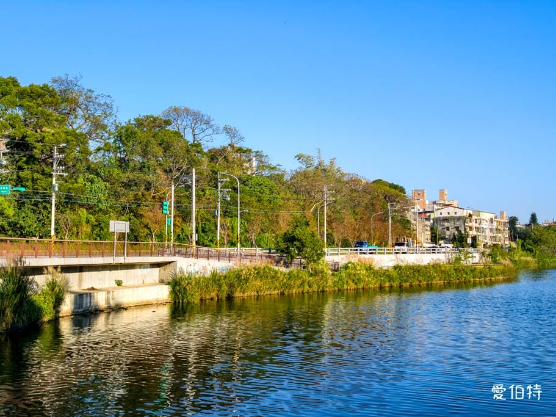
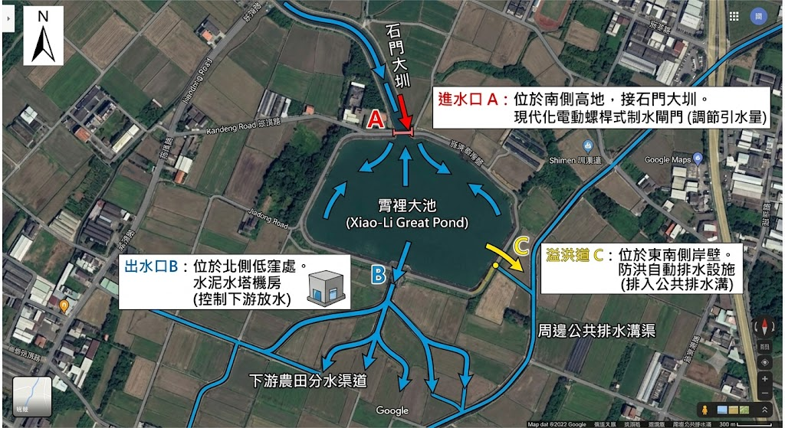
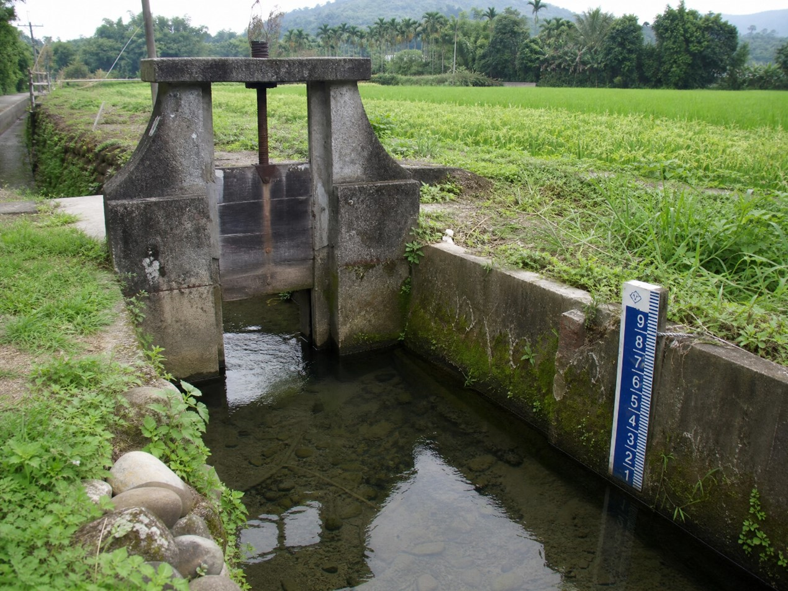

地圖、地景與水利系統
地理位置與導覽地圖
本專題田野調查之核心地理坐標與地圖標記，可透過下方地圖進行互動操作，亦可點擊連結開啟官方網址：
圖：霄裡大池位置互動地圖（可直接在畫面上放大縮小與拖曳）
給水系統：石門大圳與天然湧泉的雙重脈絡
霄裡大池的給水網路極具特色，在現代桃園水利系統架隔中，它隸屬於石門大圳給水區的幹線系統，主要負責承接與調節石門大圳霄裡導水路引入的人工水源。除了仰賴大圳渠道系統的規律化補給外，霄裡大池更得天獨厚地坐落於地下水層豐富的「天然湧泉帶」上。這群源源不絕的地下清泉，使得大池即便在冬季或大圳非供水的枯水期，依然能夠常年保持清澈且穩定的極高蓄水量，是桃園「千塘之鄉」中極少數兼具人工大圳引水與天然地下湧泉雙重補給的模範指標埤塘。
關鍵構造：進水口、出水口與溢洪道
透過現地水利設施的精準盤點，霄裡大池維持日常蓄水與防汛安全依賴三大核心幾何水利構造：
- 進水口： 位於大池南側高地，與石門大圳導水路直接交接，現場設有現代化的電動螺桿式制水閘門，用以精準調節大圳引進大池的瞬時水流量。
- 出水口（閘門）： 設於大池北側地勢低窪處，外觀為一座經典的水泥水塔小房屋構造（機房）。內部裝設有控制下游放水量的制水閘門，池水由此流出，並注入密佈的下游農田分水渠道。
- 溢洪道： 位於大池東南側岸壁，當極端暴雨或颱風導致池內水位迅速飆升、超過安全防汛警戒線時，多餘的洪水會越過溢洪道堰頂，自動排入周邊的都市公共排水溝渠，防止池水沖刷堤防引發潰堤，是極佳的自動化防災設施。

圖片來源：愛伯特部落格

【AI生成示意圖】霄裡大池水圳流向及進出水口與溢洪道位置
分水邏輯：重力流動與條件判斷的智慧調度
霄裡大池的分水管理完美體現了運算思維中的「自動化條件判斷（If-Then-Else）」。由於當地地勢呈現「南高北低」的自然坡度，池水的分流完全依賴無動力的自然「重力流動」。水利署桃園管理處會根據沿線農作物的生長週期進行計畫性放水：在春耕插秧或秋季抽穗等需水高峰期（條件觸發），將定時開啟出水口電動閘門實施灌溉；若在梅雨或颱風季（防汛條件觸發），一旦水位計偵測到水位達到溢洪水位上限，系統便會自動或人工關閉引水的進水閘門，並全面啟用溢洪道宣洩洪水，以演算法般的嚴謹邏輯保護在地居民的安全。

【AI 生成示意圖】進出水閘門與分水邏輯